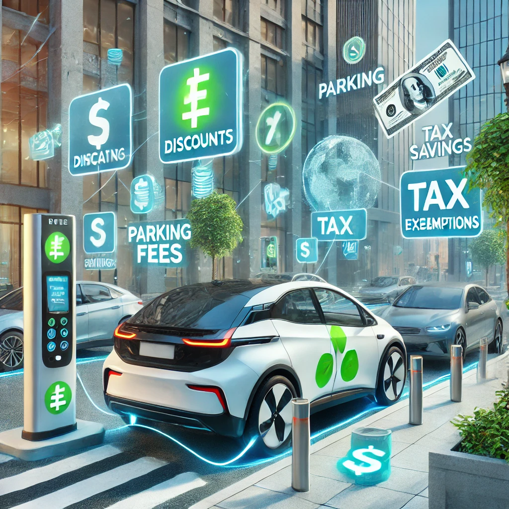

Qual futuro automotivo ?
Qual vantagem em carros eletricos ?
Silêncio e Conforto Acústico
Os motores elétricos funcionam de maneira extremamente silenciosa, o que proporciona uma experiência de condução mais confortável e agradável, especialmente em ambientes urbanos. A ausência de ruídos mecânicos reduz o estresse auditivo, criando um ambiente mais tranquilo dentro do veículo, o que é uma vantagem significativa em relação aos carros a combustão.
Impacto Ambiental Positivo
Uma das principais vantagens dos carros elétricos é que, por não utilizarem combustíveis fósseis, eles produzem zero emissões de poluentes. Isso ajuda a reduzir a poluição do ar, contribuindo diretamente para a melhoria da qualidade de vida nas cidades e para o combate às mudanças climáticas. Esse fator torna os veículos elétricos uma escolha mais sustentável para o futuro do transporte.
Eficiência Energética
Os carros elétricos também são mais eficientes em termos energéticos. Enquanto os motores a combustão convertem apenas uma parte da energia do combustível em movimento, desperdiçando o restante em forma de calor, os motores elétricos conseguem utilizar a maior parte da energia elétrica para gerar movimento. Isso se traduz em um desempenho mais eficiente, além de uma autonomia que tende a melhorar com o avanço das tecnologias de baterias.
Menor Custo de Manutenção
Outra vantagem importante dos veículos elétricos é a manutenção mais simples e barata. Como possuem menos peças móveis e não exigem trocas regulares de óleo, os carros elétricos sofrem menos desgaste e necessitam de menos manutenção ao longo do tempo. Isso pode gerar uma economia significativa para os proprietários, especialmente em comparação com os custos recorrentes de manutenção de carros a combustão .
Incentivos e Benefícios Econômicos
Em muitos países, os governos oferecem incentivos fiscais, descontos em pedágios e isenção de tarifas de estacionamento para proprietários de veículos elétricos. Esses incentivos, somados ao menor custo de manutenção e ao impacto ambiental positivo, tornam os carros elétricos uma escolha econômica e vantajosa a longo prazo.
